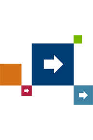

Current accounts
INTRODUCING CLUB LLOYDS
Club Lloyds is a current account that offers more ways to make your money grow. Whether you're saving for a rainy day, making big plans for the future or just enjoying life right now, we'll help you make the most of your finances. Find out more about Club Lloyds current accounts
Credit Cards
A handy way to manage your money
We all need some flexibility with our finances. With our range of credit cards offering rewards, purchases and great deals on balance transfers, you can manage your money more easily. Find out more about Credit Cards
Savings
TURN YOUR GOALS INTO REALITY
It's easier to reach your savings goals when you have the right account. We'll help you choose the one that will get you there. Find out more about Savings
ISAs
The current tax year ends on Sunday 5 April
ISAs (individual savings accounts) are a way of saving money without paying personal tax on interest or returns you earn. There are two main types of ISA that we offer, cash ISAs and stocks and shares ISAs. Find out more about ISAs
Investments
SET A REMINDER
The tax of this year's ISA allowance ends on 5 April 2015. You can invest up to £15,000 tax efficiently in our Stocks and Shares ISA. Find out more about Investments
Mortgages
HOME BUYING WITHOUT THE HARD WORK
Whether you're buying your first home, looking for a better deal or simply want to know more about mortgages, we can help. Find out more about Mortgages
Loans
PUT YOUR PLANS INTO ACTION STRAIGHTAWAY
A loan could help you with anything from debt consolidation to buying a new car, and we could put the money in your account immediately. How much we lend and the rate available are subject to our assessment of your circumstances. You must be 18 years of age or over and a UK resident. You must have had a Lloyds Bank Current Account for more than three months. Find out more about Loans
Insurance
PROTECTION FOR THE THINGS THAT MATTER
It's reissuring to know you have got cover should something unexpected happen. Our range of insurance policies can give you the cover you need for the things that matter to you. Find out more about Insurance
Travel Services
FOR A TROUBLE-FREE TRIP ABROAD
Going abroad is less hassle when you make the right preparations. We can help with all the essentials, from commission-free currency to travel insurance. Find out more about Travel Services